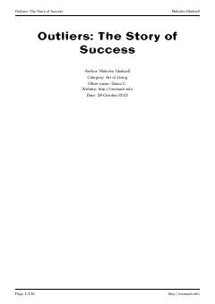

OTMuvaffaqiyatga erishishning yashirin ijtimoiy va madaniy omillarini tushuntiruvchi mashhur asar.
Ushbu kitob muvaffaqiyatga erishgan insonlarning hayotini tahlil qilib, ularning muvaffaqiyati ortida nafaqat shaxsiy qobiliyat, balki madaniy va ijtimoiy omillar ham muhim rol o'ynashini ko'rsatib beradi. Muallif Malcolm Gladwell turli misollar orqali insonlarning jamiyatdagi o'rni va imkoniyatlari qanday shakllanishini ilmiy va qiziqarli tarzda yoritadi.